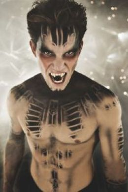
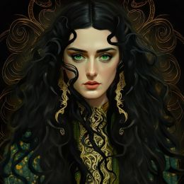
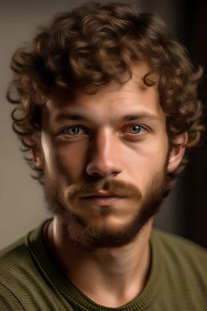
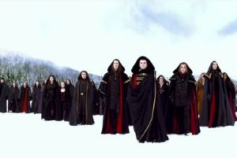
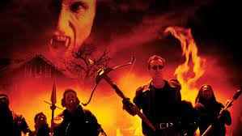
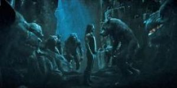
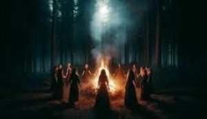

Die Gegner im Dhampir Projekt sind vielfältig und herausfordernd, um das Spielerlebnis spannend zu gestalten. Hier sind einige der Hauptgegner, denen die Spieler begegnen könnten:
Anastacia
Oberhaupt des Hauptclans der Vampire im Rheinland (4000 Jahre alte Urvampirin)
Langes Rotes Haar mit Tiefgrauen Augen
Hasst Kreaturen wie Daniel und verflucht dessen Vater, verrät aber nicht seinen Namen oder Daniels Herkunft und Fähigkeiten.

Luca
Rechte Hand von Anastacia
Schwarzer Zopf mit Locken mit Blau-grünen Augen
Bekämpft Dhampire seit Jahrhunderten und liebt es Jugendliche zu quälen.
Sessna
Rechte Hand von Anastacia
Offenes Blond-Weißes Haar mit Eisblauen Augen
Priesterin des okkulten mit magischen Kräften.
Rudolph
Oberhaupt des Hauptclans der Werwölfe im Rheinland
Braun mit blauen Augen
Hilft bei der Bekämpfung der Vampire und der Recherche nach Daniels Herkunft. Hetzt in aber auch die deutschen Schutzkräfte nach, weswegen er zwielichtig scheint.

Semilpha
Hexenoberhaupt
Schwarze, zu einem Bildnis geformte Haare mit grünen Augen
Will Daniels Blut für ihre Rituale der dunkle Kunst.

Stefan
Polizeikommissar
Braun mit Lila Augen
Arbeitet in der Spezialeinheit zur Suche nach verschwundenen Personen.
Die Gegnergruppen im Dhampir Projekt haben je nach Art, Gegenstände um Vampire und Dhampiren zu bekämpfen.

Vampire
Herrschersippe des Rheinland seit Jahrtausenden.
Mitglieder sind Europäischer Herkunft
Verfolgen Vampire anderer Ethnien und Wesen anderer übernatürlichen Natur mit ihren unterschiedlichen Kräften. Ernähren sich vom Blut von gefangenen Menschen und haben Verträge mit Politikern und anderen mächtigen Menschen.

Vampirjäger
Jagen Übernatürliche Wesen auf der ganzen Welt, am liebsten Vampire
Mitglieder unterschiedlicher Herkunft
Bekämpft alles was nicht menschlich ist, mit Säure, Silber, Arzneigemischen und magischen Artefakten.

Werwölfe
Jagen Vampire als ihre natürlichen Gegnertypen
Mitglieder unterschiedlicher Ethnien
Bekämpfen Vampire, und vampirähnliche Rassen mit ihren Werwölfgift und Ritualen.

Hexen
Jagen Übernatürliche Wesen um ihre Rituale durchzuführen und macht zu erlangen
Mitglieder unterschiedlicher Herkunft
Nehmen andere Spezies mit ihren Insignien, Tränken und Zaubern gefangen und entwenden ihnen Körperteile.
Polizei
Schutzeinheit der Menschen die alles unnormale bekämpft und dafür sorgt das ihren Mitmenschen nichts passiert.
Mitglieder unterschiedlicher Völker
Bekämpfen Übernatürliche Wesen mit Metallen, Säuren, geschmiedeten Objekten und Ritualen
Letztes Update: 29.09.2025